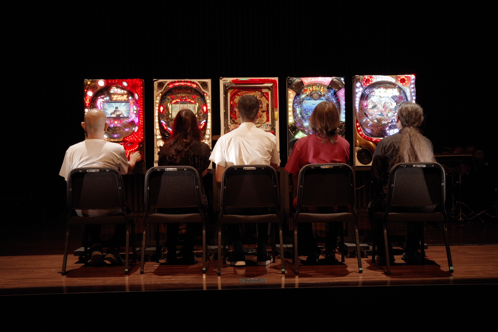

状態 No. 1 (2018)
for one or any number of performers
Play the actual pachinko machine.
パチンコの実機をプレイする
日本のパチンコホールの空間は、他にない独特の音響を轟かせている。そしてそのような空間が当たり前のように都会から地方までたくさん存在するけれど、その音響は、騒音であり、煩いものとして一蹴されることが多い。そんな轟音、煩わしいものとして耳を塞がれている音響に私は惹きつけられる。この轟音の中身はどのような状態にあるのだろうか。実機ひとつひとつが音を発する目的は基本的には心を高揚させ射幸心を煽ることだ。そしてギャンブル、お金をめぐる高揚や欲が生み出す音という側面も強い。パチンコ台が何百台も集まって奏でる轟音ドローンの特殊なエネルギーは、自動ドアの開閉から一瞬音の漏れ出るパチンコ店の前を通るたびに気になる存在であった。《状態No.1》ではそれら音の事象を内側から捉えるべく、少人数でのプレイから音楽作品として観察する。
photo by Hiroyuki Matsukage, 2025
commissioned by Tokyo Gen'On project
premiered by Tokyo Gen'On project, July 11 2018